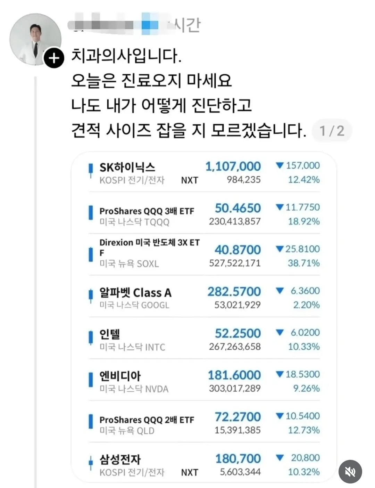

과잉진료 ON

과잉진료 ON
암만 그래도 바가지 씌우겠다는 말을 해서 득이 될게 있나ㅋㅋㅋ
이미 손해가 많으니까...
제정신이 아니기때문 ㅋㅋㅋ
ㅋㅋㅋㅋㅋㅋㅋㅋㅋ
???: 오늘은 치과에 나타나지 마쇼. 이건 마지막 경고요.
어? 이부분이 썩어서 발치 6개하시구 임플란트 7개 넣으시면 될거같아요 그럼 실장님 상담가실게요
정신나가버린 ㅋㅋㅋㅋㅋ
전 치아 임플란트행이다!!
지인 중에 의사있기 <<< 씹사기 같긴 함
언제부터 지인할인을 받고있다고 착각한거지?


ㅋㅋㅋㅋㅋㅋ콘개웃기네
비급여항목은 결제하는 카운터나, 병원 홈페이지에 미리 고지해놓더라
예를 들어서 크라운하는데 30만원인데, 지인 할인해서 25만원 해주면 할인이 맞긴함ㅋㅋㅋ
난 삼촌이 의사인데 가끔 명절에 독감예방주사 같은거 놔줌
존나 무섭네ㅋㅋㅋㅋㅋㅋㅋㅋㅋㅋㅋ
근데 ㅅㅂ 중복 항목을 몇개나 산거야? ㅋㅋㅋ
다 같이 움직이는 연계된 종목들만 있구만
저건 하나 망가지면 다 같이 나가리 되는 포트폴리오네
13억? ㄷㄷ
퍼거슨 1승 추가
ㅋㅋㅋㅋ
ㅋㅋㅋㅋㅋㅋㅋ